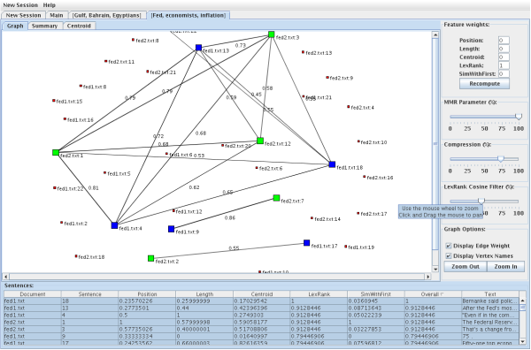

LexRank/Mead Demo

Overview
The Mead Demo applet is a program that lets you run mead without having to
install it locally. To begin, you load raw documents from various sources. The
documents are then sent to Mead, which clusters the documents and calculates
scores for each sentence and sends the results back to the demo. The demo
displays visualizations of the clusters, lets you set various parameters, and
generates a summary.
Adding Documents
There are three ways to add documents:
- Copying and pasting text
- Entering a URL to a document
- Entering a URL to a directory listing of documents
Copying and Pasting Text
In the menu bar, go to "New Session > Open File (Copy/Paste)...". A dialog will appear
that will let you enter a document name and a document body.
Entering a URL to a Document
In the menu bar, go to "New Session > Open File (URL)...". A dialog will appear that will
let you enter a URL to a document. For example, you would enter http://myhost.com/myfile.txt
into the dialog to load that file.
Entering a URL to a Directory Listing
In the menu bar, go to "New Session > Open Directory (URL)...". A dialog will appear that will
let you enter a URL to a directory. Make sure that the URL you enter will generate a directory
listing of files when viewed with a web browser and that the directory contains only the
documents you wish to use in Mead (no other files or subdirectories).
An example set of documents in a directory listing is available at
Setting Clustering Parameters (Optional)
When the documents are sent to Mead, it will create clusters of similar documents using a
tool called CIDR. You can set CIDR parameters by going to
"New Session > Set clustering parameters...". There are four clustering parameters:
- Similarity Threshold - how similar documents must be to be grouped together
- Word Decay - how fast a common word loses its relative importance
- Minimum nidf - the minimum nidf value of a word in order for it to be added
to the cluster centroid
- Centroid Size - the number of words to keep in the cluster centroid
Removing Documents
To remove a document, select it from the "Loaded Documents" table and click the "Remove Selected
Rows" button.
Running Mead
To run Mead, make sure you have added at least one document and go to "New Session > Run Mead".
It might take a few minutes for the request to be fully processed.
After everything has been loaded, at least two new tabs will open in the applet. The "Main"
tab gives an overview of the clusters, documents, and sentences. After the "Main" tab there
will be one or more cluster tabs, labelled by their top three centroid words.
To start over, just add new documents to the (now cleared) list on the "New Session" tab and
run Mead as before.
The Cluster View
The cluster view consists of three components: the main view in the center, the control panel
to the right, and the sentence table at the bottom. The main view has three separate views:
the graph view, the summary view, and the centroid view.
The Sentence Table
The sentence table displays the list of sentences in the cluster as well as their document,
order in the document, feature scores, and overall score. Highlighted rows are sentences
that appear in the summary.
The Control Panel
The control panel lets you specify parameters used to compute the summary as well as
visualization settings.
- Feature Weights - controls the relative weights of the sentence
scores.
- MMR Parameter - controls how to rerank sentences based on redundant
information (100% means redundant information is not penalized, 0% means that
redundant information is highly penalized)
- Compression - controls the size of the summary
- LexRank cosine filter - controls the cutoff similarity score for LexRank
- Graph Options - controls how the graph is displayed
The Graph View
The graph view gives a visual representation of the cluster as a graph. Each vertex on the
graph represents a sentence and each edge between vertices represents the similarity between
those two sentences (this is used to calculate the LexRank feature). Sentences from the
same document will be the same color. Sentences that do not appear in the summary will be
represented by small, red vertices.
To display the vertex
names or edge weights, use the checkboxes at the bottom of the control panel. To pan the graph,
click and drag the background. To zoom the graph, use the scrollwheel on your mouse or the
zoom buttons on the control panel.
The Summary View
The summary view displays the top ranked sentences in the cluster.
The Centroid View
The centroid view displays a table of words in the cluster and their corresponding
centroid score.